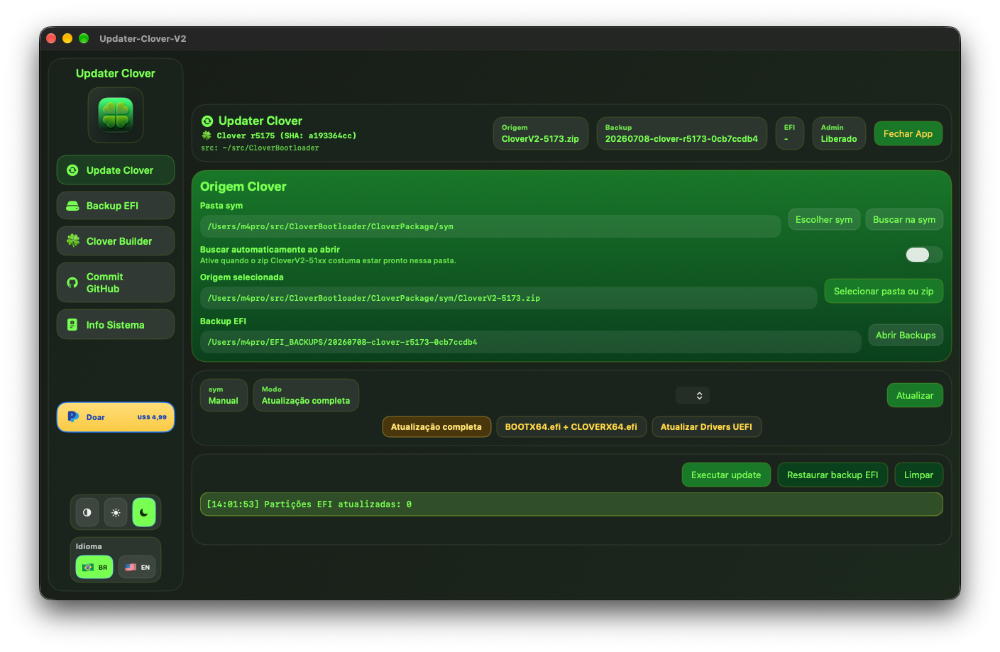
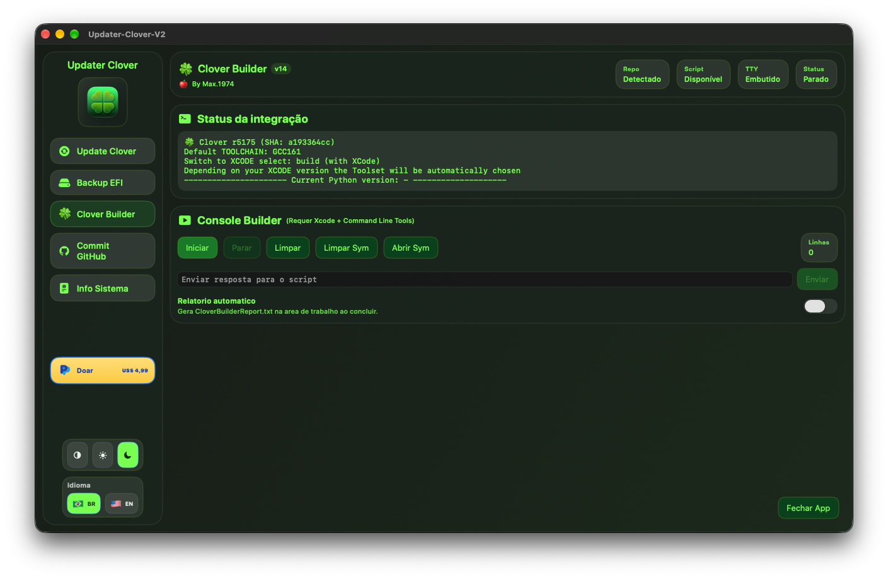
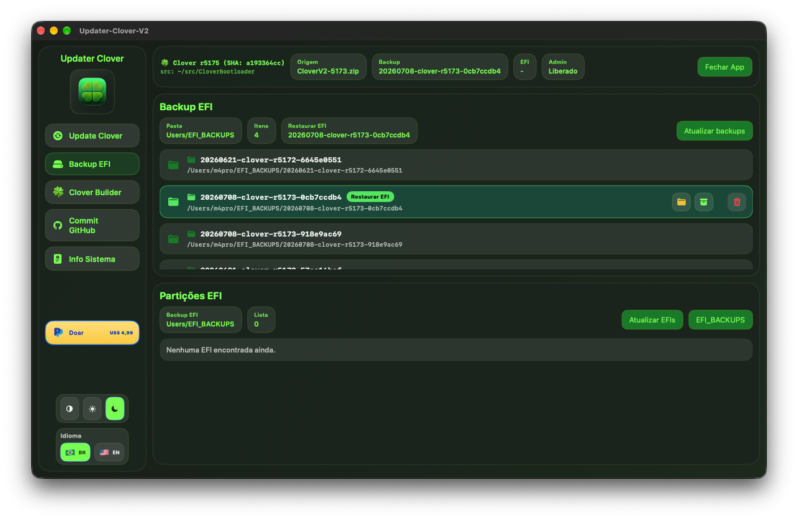
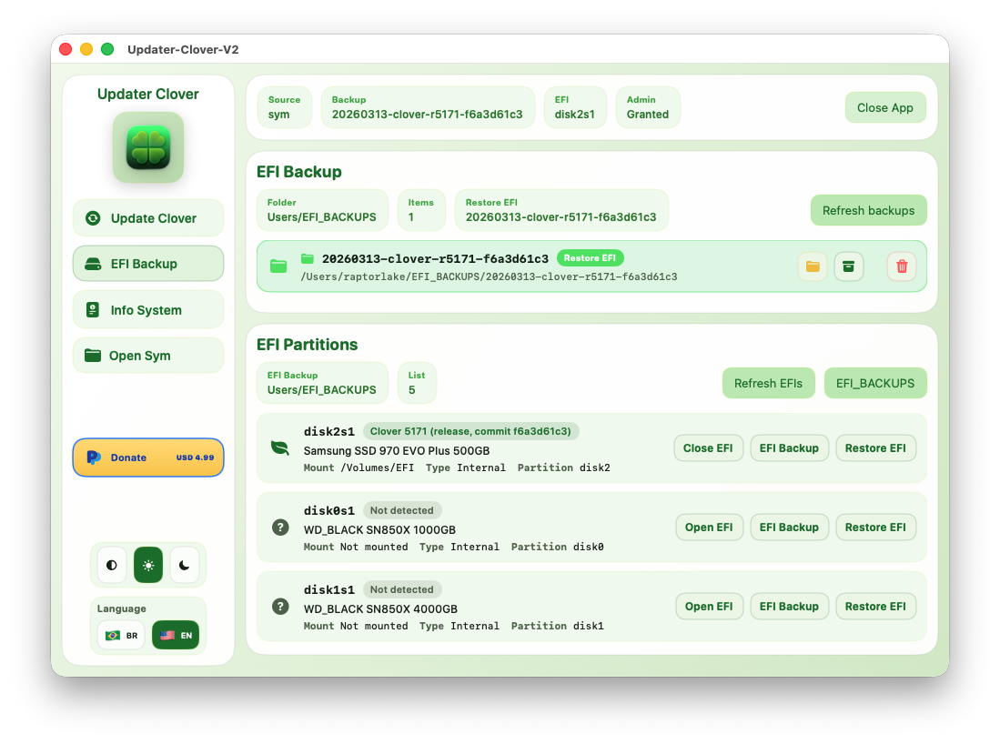
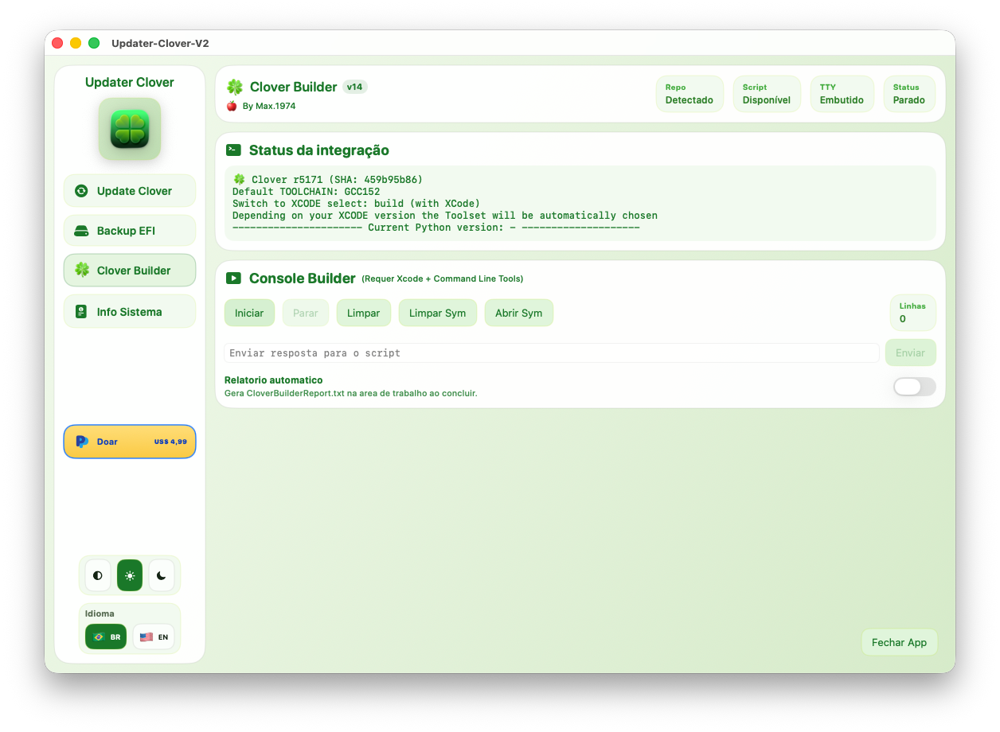
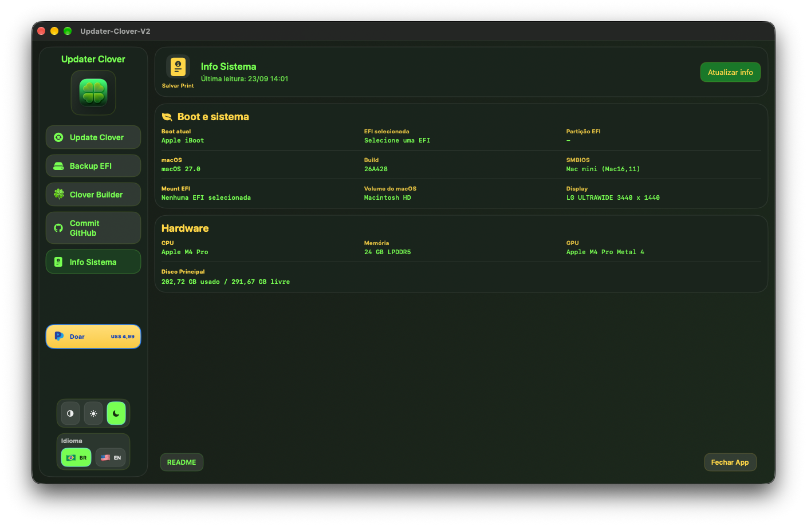

Updater Clover V2 Updater Clover V2
O app macOS para atualizar o Clover, criar backups completos da EFI e restaurar com um clique. Compatível do Ventura ao Tahoe. The macOS app to update Clover, create full EFI backups, and restore with one click. Compatible from Ventura to Tahoe.

Veja o fluxo real do app antes de baixar See the real app flow before downloading
O vídeo mostra a interface em uso, a navegação entre abas e o comportamento do Updater Clover V2 durante as tarefas principais.
The video shows the live interface, tab navigation, and how Updater Clover V2 behaves during its main tasks.
- Atualização do Clover com visual modernoClover update workflow with the modern interface
- Backup e restauração de EFI em poucos cliquesEFI backup and restore in just a few clicks
- Visão prática para quem vai instalar o app pela primeira vezPractical preview for anyone installing the app for the first time
4 Abas Poderosas em 1 App 4 Powerful Tabs in 1 App
Tudo que você precisa para gerenciar o bootloader Clover e a partição EFI do seu Hackintosh. Everything you need to manage the Clover bootloader and your Hackintosh EFI partition.
Atualiza os arquivos essenciais do Clover diretamente na partição EFI. Suporte a modo completo (sincroniza tools) e modo simples (apenas os arquivos principais).
Updates essential Clover files directly on the EFI partition. Supports full mode (syncs tools) and simple mode (only main files).
Cria backups completos da EFI em ~/EFI_BACKUPS. Lista todos os backups salvos, permite restaurar para qualquer partição EFI com um clique.
Creates full EFI backups in ~/EFI_BACKUPS. Lists all saved backups and allows restoring to any EFI partition with one click.
Exibe informações completas do hardware: CPU, GPU, memória, macOS, versão do Clover, partição EFI, discos externos. Gera screenshot com um clique.
Displays complete hardware info: CPU, GPU, memory, macOS, Clover version, EFI partition, external disks. Generates a screenshot with one click.
Hardware · Boot · Disks
Abre diretamente a pasta sym configurada no app — a fonte principal dos arquivos do Clover. Pesquisa automática ao iniciar o app.
Opens the configured sym folder directly — the main source of Clover files. Automatic search on app launch.
📄 Arquivos atualizados pelo app
📄 Files updated by the app
Galeria Atualizada do App Updated App Gallery
Capturas substituídas com os arquivos mais recentes. Clique em qualquer imagem para ampliar. Screenshots replaced with the latest files. Click any image to enlarge.





3 Temas para Todos os Gostos 3 Themes for Every Taste
Escolha o tema que combina com você — ou deixe o app seguir o tema do sistema automaticamente. Choose the theme that suits you — or let the app follow the system theme automatically.
Interface escura e elegante. Reduz o cansaço visual — perfeito para uso noturno e ambientes profissionais.
Elegant dark interface. Reduces eye strain — perfect for nighttime use and professional environments.
Interface clara e limpa, perfeita para ambientes bem iluminados. Confortável para uso diurno.
Clean and bright interface, perfect for well-lit environments. Comfortable for daytime use.
Segue automaticamente o tema do macOS. Muda quando o sistema muda — sem configuração manual.
Automatically follows macOS theme. Changes when the system changes — no manual setup needed.
Como Usar o Updater Clover V2 How to Use Updater Clover V2
Cinco passos simples para atualizar o seu Clover de forma segura. Five simple steps to safely update your Clover.
Clique em Select folder or zip e escolha a pasta extraída ou o arquivo .zip do CloverV2.
Click Select folder or zip and choose the extracted folder or the CloverV2 .zip file.
Selecione no menu a partição EFI do disco desejado (ex: disk2s1).
Select the EFI partition of the desired disk from the menu (e.g. disk2s1).
Se necessário, clique em Open EFI para montar a partição. O app pedirá senha de administrador.
If needed, click Open EFI to mount the partition. The app will ask for an admin password.
Selecione o modo: Full update (sincroniza tools), BOOTX64 + CLOVERX64 ou Update UEFI Drivers.
Select the mode: Full update (syncs tools), BOOTX64 + CLOVERX64 or Update UEFI Drivers.
Clique em Run update. Acompanhe o log em tempo real. O app faz o backup automático antes de atualizar.
Click Run update. Follow the real-time log. The app makes an automatic backup before updating.
O Updater Clover V2 é completamente gratuito. Se ele te ajudou a salvar tempo e proteger sua EFI, considere fazer uma doação para apoiar o desenvolvimento. ☕
Updater Clover V2 is completely free. If it helped you save time and protect your EFI, consider donating to support development. ☕
- App 100% gratuito — sem licença, sem assinatura
- 100% free app — no license, no subscription
- Atualização do Clover com segurança e backups automáticos
- Safe Clover update with automatic backups
- Interface em Português (BR) e English
- Interface in Portuguese (BR) and English
- 3 temas: Dark 🌑, Light ☀️ e Automático ⚙️
- 3 themes: Dark 🌑, Light ☀️ and Auto ⚙️
- Compatível com Hackintosh e Mac nativos
- Compatible with Hackintosh and native Macs
- Código aberto no GitHub
- Open source on GitHub
Dúvidas? picelli1974@icloud.com
Questions? picelli1974@icloud.com
Perguntas Frequentes Frequently Asked Questions
~/EFI_BACKUPS com o nome da versão do Clover e a data.~/EFI_BACKUPS named with the Clover version and date.